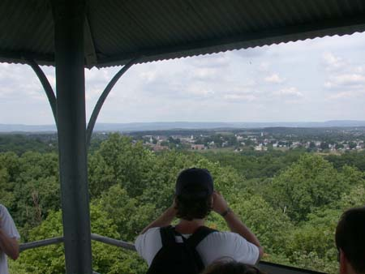

Day Three with Prof. Gary Gallagher / NK010728092026_793
7/28/2001

Click on the photo above to view a 360 degree panorama taken from the Culp's Hill observation tower. You will need QuickTimeVR installed in your browser to view. Click and drag to scroll right and left. Shift zooms in, Ctrl zooms out.